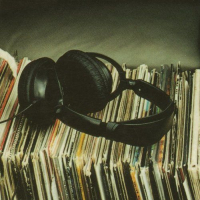

Keyboard spelen
Ik speel al een paar jaar keyboard. Ik vind het leuk om verschillende muziekstijlen en geluiden te ontdekken.
Hallo! Ik ben Débora en welkom op mijn persoonlijke website.
Volledige naam: Débora Lima Ribeiro
Adres: Meensestraat 9, 8500 Kortrijk
Volledige naam: Débora Lima Ribeiro
Telefoonnumer:+32 2 588 77 10
E-mailadres: debora.lr@gmail.com

Ik speel al een paar jaar keyboard. Ik vind het leuk om verschillende muziekstijlen en geluiden te ontdekken.
Ik speel saxofoon sinds mei 2026. Ik moet nog veel bijleren, maar ik vind het leuk om nieuwe technieken te leren en mezelf te verbeteren.
Ik lees graag psychologische thrillers met complexe personages en andere thrillers met spannende verhalen en onverwachte wendingen.
Ik zing graag en vind het leuk om muziek te maken en mijn stem te gebruiken om emoties uit te drukken.

Ik luister graag naar R&B, pop, pagode en bossa nova. Ik maak ook graag verschillende playlists voor verschillende moods. Afhankelijk van hoe ik me voel, kies ik andere muziek om naar te luisteren.

Ik lees graag boeken die je hoofd niet met rust laten: psychologische thrillers, mysteries, verhalen waarin de personages meer gelaagd zijn dan het plot. Ik lees om te puzzelen: theorieën vormen, motieven ontrafelen, iemand vanbinnen leren begrijpen. Verhalen die blijven, daar gaat het me om.

Ik kijk graag naar actiefilms en komedies. Soms kijk ik ook graag naar emotionele films met een sterk verhaal en personages waarmee je kunt meeleven. Ik vind het leuk om af te wisselen afhankelijk van mijn mood.

Ik ben geïnteresseerd in psychologie en probeer graag te begrijpen waarom mensen op een bepaalde manier denken, voelen en handelen. Ik vind het interessant hoe ervaringen, emoties en persoonlijke overtuigingen iemands gedrag kunnen beïnvloeden.

Ik denk graag na over diepere vragen over het leven, menselijke relaties, identiteit en de manier waarop we de wereld begrijpen. Ik vind het interessant om verschillende perspectieven te onderzoeken en niet zomaar alles als vanzelfsprekend te zien.

Ik vind het interessant om talen te leren en meer te ontdekken over andere culturen. Een taal leren is voor mij niet alleen nieuwe woorden leren, maar ook begrijpen hoe mensen communiceren en hoe cultuur hun manier van denken beïnvloedt.